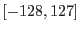
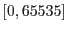
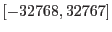
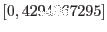
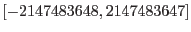
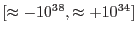
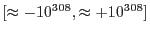

XMM-Newton Science Analysis System
xmmselect (xmmselect-2.65.12) [xmmsas_20170112_1337-16.0.0]
Column selection
This constitutes the central area of the xmmselect GUI. It consists
of a vertically arranged list of pushable buttons, each corresponding
to one numeric, string, or boolean column found in the specified
input table. Each button is labeled with the name of the column
it represents. To its left are up to two associated check buttons which,
when being selected, mark the column as primary axis in the extraction
of a an image or spectrum/histogram/rates curve, respectively
(for more information on the function of the check buttons see
below.
To the right of the button with the name of the column
is a short framed label which specifies the types of the column:
| label |
column type |
canonical value range |
| I8 |
8-bit integer |
 |
| U16 |
16-bit unsigned integer |
 |
| I16 |
16-bit signed integer |
 |
| U32 |
32-bit unsigned integer |
 |
| I32 |
32-bit signed integer |
 |
| R32 |
32-bit real |
 |
| R64 |
32-bit real |
 |
| S |
string |
n/a |
| B |
boolean |
true/false |
To the right of this label are more
GUI elements whose type depend on the type of the column.
If the number of data columns in the input is large the list of
push buttons might become too large to fit on the screen. In this
case the entire middle area will become vertically scrollable as shown
in this figure.
Subsections
XMM-Newton SOC/SSC -- 2017-01-12